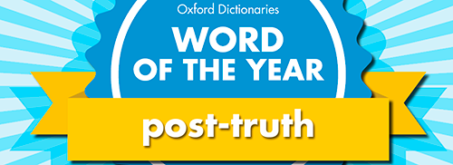

Según la Wikipedia los algoritmos son conjuntos finitos de instrucciones o pasos que sirven para
ejecutar
una tarea o resolver un problema. Un concepto muy relacionado con el big data y el uso de las huellas
digitales que dejamos al navegar por la red. A los algoritmos se les acusa de falta de transparencia y
neutralidad.
Burbuja de filtros
El concepto hace referencia a la personalización de la web, los resultados de las consultas que hacemos
en
Google (filtrados según nuestro perfil) y el uso intensivo de las redes sociales tiene una consecuencia
en
nuestra vida digital: vivimos en una burbuja donde la nuestra realidad paralela se convierte en la única
realidad y nos atrapa. Hay mucha literatura sobre el tema y recursos para hacerle frente.
Derecho a la información
La Constitución española recoge el derecho a comunicar o a recibir libremente información veraz por
cualquier
medio de difusion. Es la base de todos sistema democrático.
Discurso del odio
Instiga violencia, discriminación u hostilidad hacia determinados grupos sociales. Las redes sociales
contribuyen a esparcir prejuicios, y muchas campañas tratan de luchar contra ello.
Hate Speech
Fake news
Este término nos sirve para identificar desde las noticias directamente falsas (mentiras) hasta las
noticias
falseadas (las que conectan hechos reales en contextos falsos, los contenidos manipulados, etc.). Las
noticias falseadas responden a una intención política y/o económica.
Posverdad
Tiene el honor de ser la palabra del año 2016 según el diccionario Oxford, que la define como:
Relating to or denoting circumstances in which objective facts are less influential in
shaping
public opinion than appeals to emotion and personal belief.

Es, pues, el tipo de información donde los hechos objetivos tienen menos influencia que las llamadas a
la
emoción y a las creencias personales. Muy ligado también al concepto de "hechos alternativos".
Troll
Hay muchos trolls en las redes sociales y no son exactamente los monstruos de la mitología escandinava.
Este
adjetivo se asocia a todos los perfiles que se dedican a hacer comentarios tóxicos con mala fe, o a
mentir
directamente, con la intención de provocar, de escarnecer o de incendiar los debates en foros o
comunidades
virtuales.